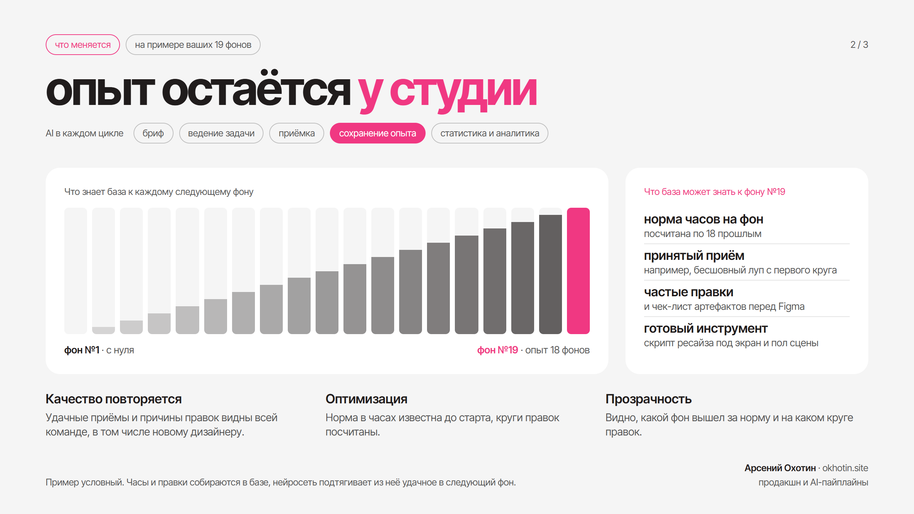
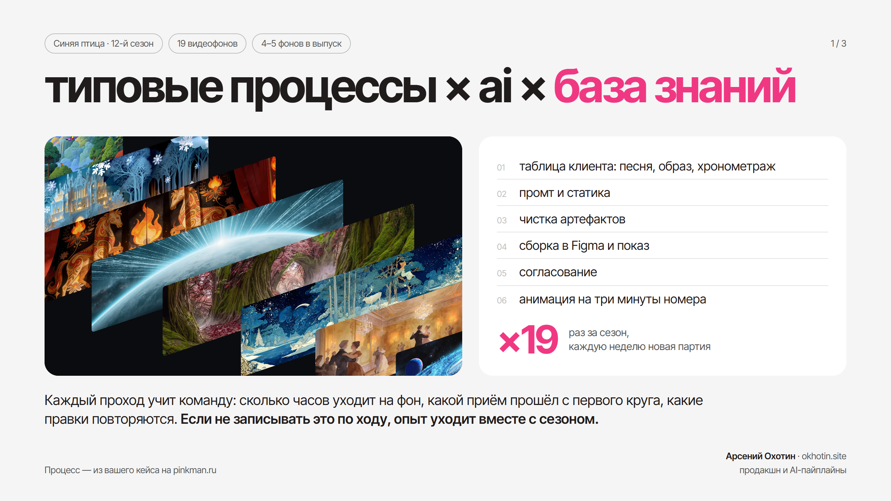
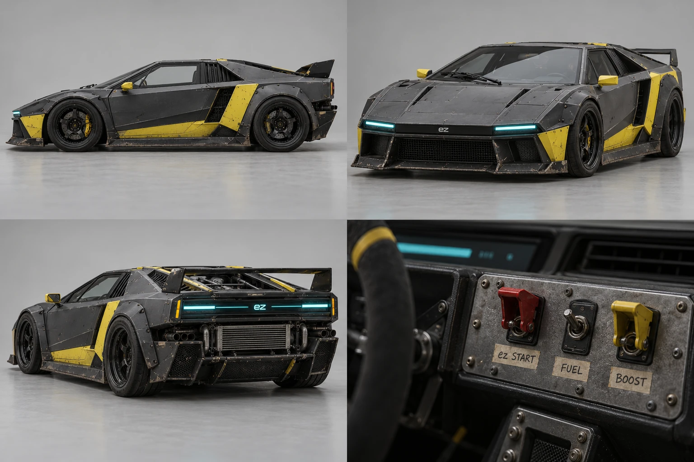
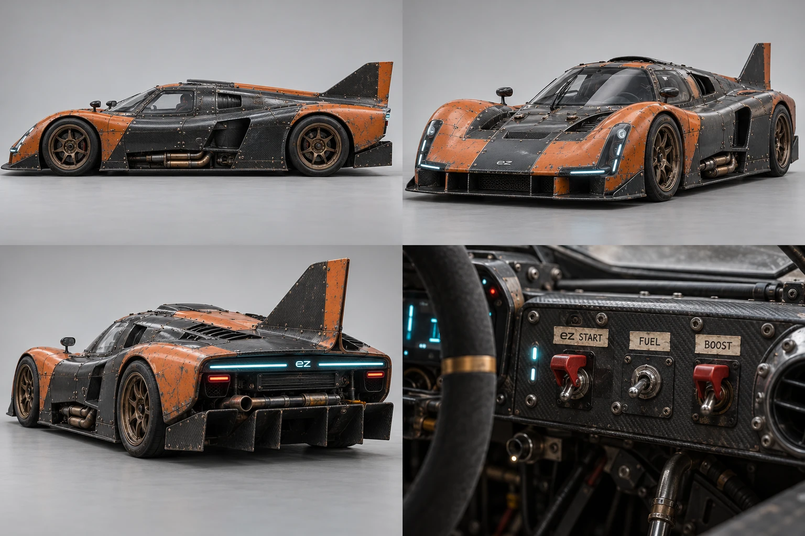
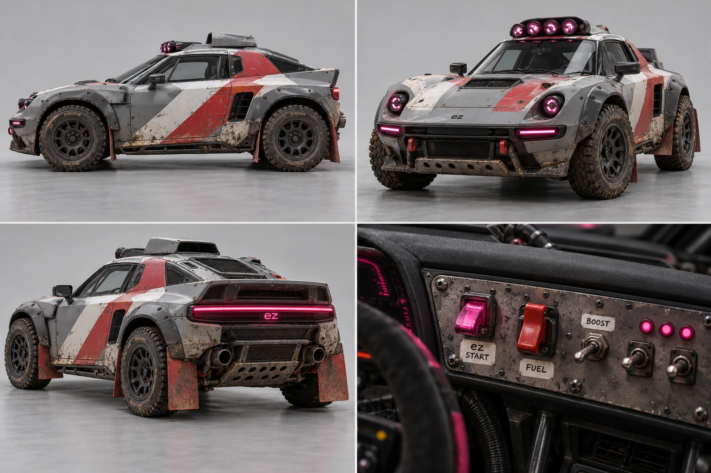
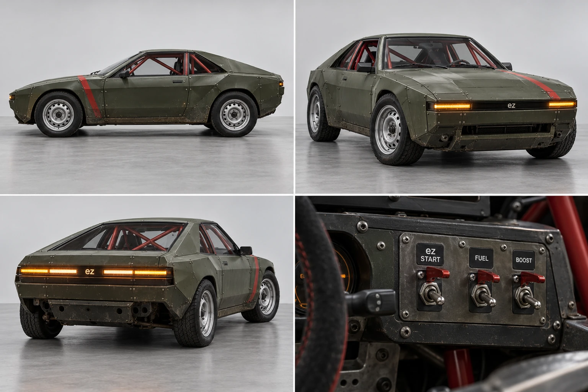
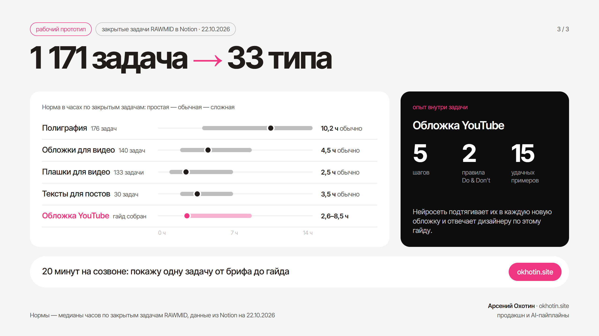
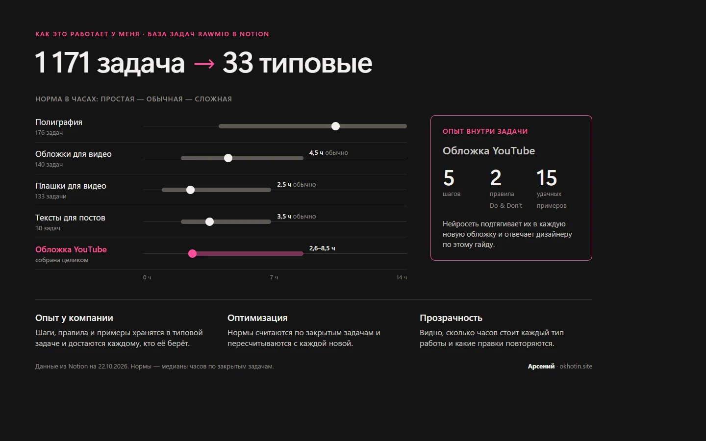

AI pipeline
2026 · [дисциплина] · Креативный директор · [команда]
01 / бриф
AI в каждом цикле

02 / промт и статика
чистка артефактов

03 / […]
[…]



04 / согласование
[…]
[…]
05 / сохранение опыта
[…]

